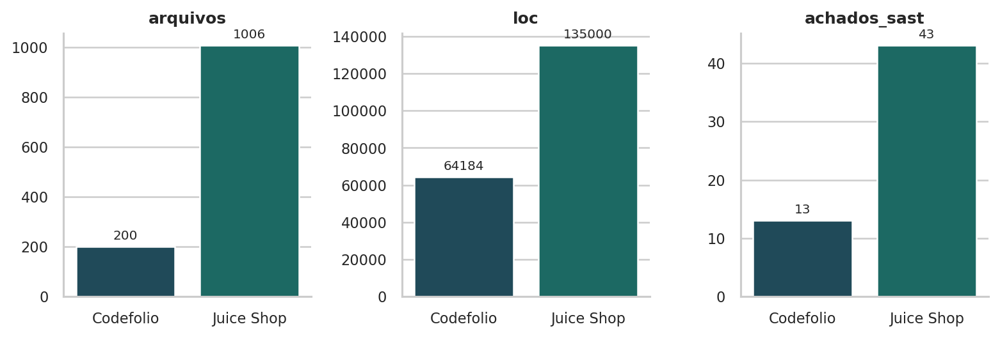
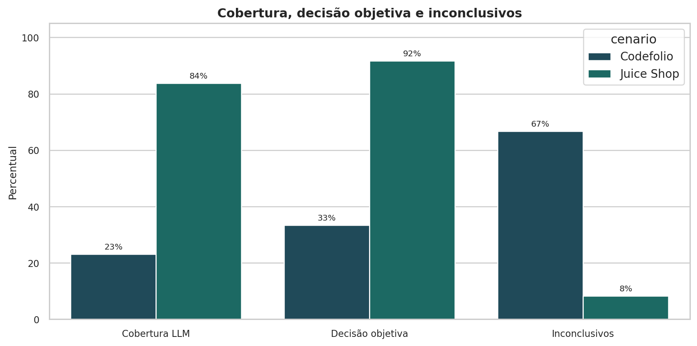
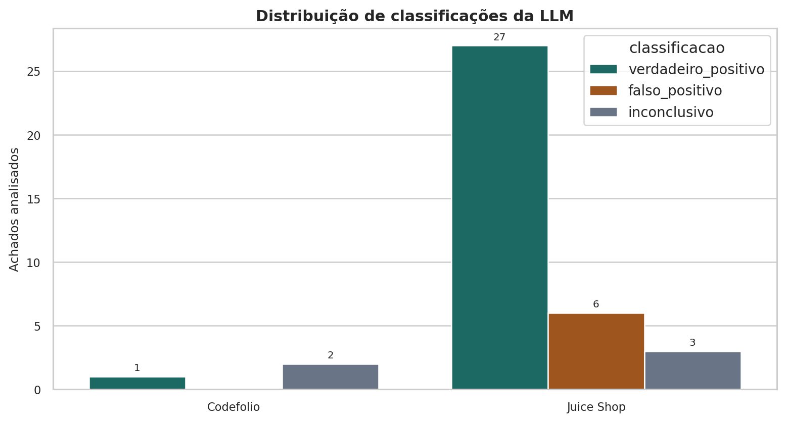
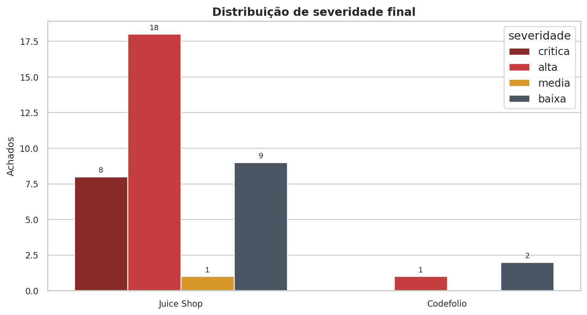
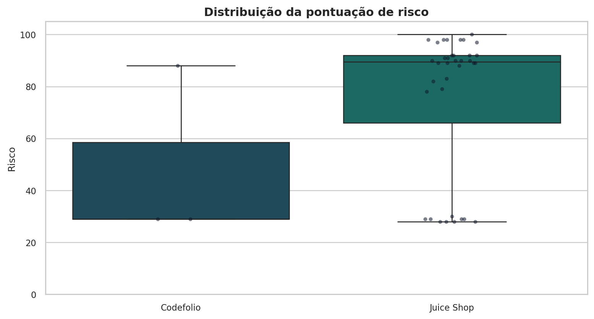
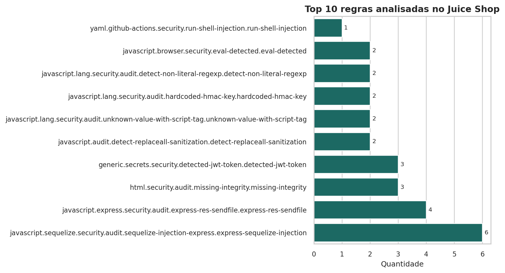
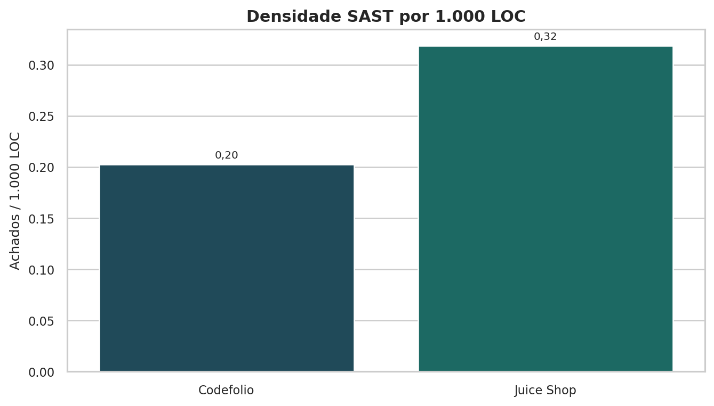
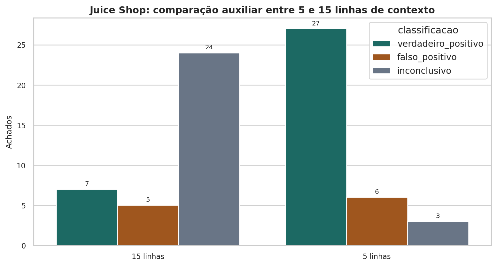
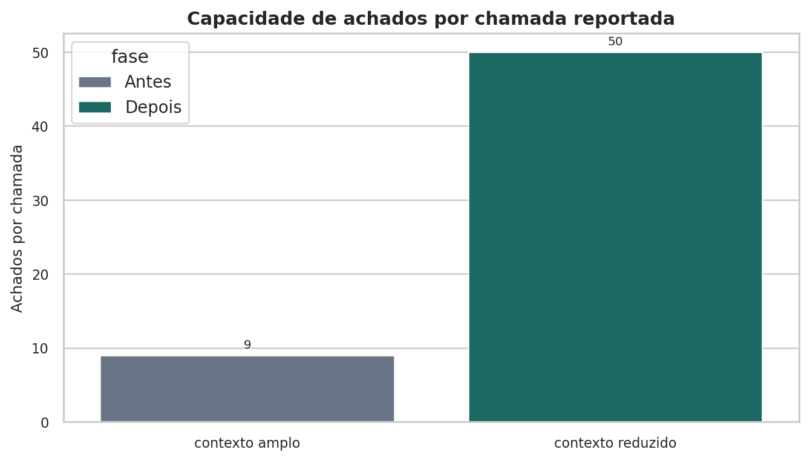

Consolidação operacional das execuções de validação, com foco em cobertura, qualidade das decisões, densidade SAST e custo estimado por modelo. A distribuição do conteúdo segue o formato de leitura do relatório principal, mas com a mesma linguagem visual aplicada ao restante da frente VeritasSec.
A tese principal do documento é metodológica: o gargalo não deve ser descrito como “a LLM tem limitação”, mas como custo e escalabilidade da seleção de contexto. O envio amplo de código aumenta tokens por achado, reduz cobertura por chamada e aumenta a chance de ruído contextual.
No Juice Shop, a redução de contexto produziu uma execução operacionalmente forte: 36 de 43 achados do SARIF analisados, com 27 verdadeiros positivos, 6 falsos positivos e 3 inconclusivos. No Codefólio, a execução foi parcial: 3 de 13 achados analisados, com impacto relevante de fallback por indisponibilidade do Gemini.
Tabelas
Tamanho dos cenários e densidade SAST
| cenario | arquivos | linhas_branco | comentarios | loc | linhas_total | achados_sast | achados_por_1000_loc |
|---|---|---|---|---|---|---|---|
| Codefolio | 200 | 6.240 | 2.984 | 64.184 | 73.408 | 13 | 0,20 |
| Juice Shop | 1.006 | 23.463 | 5.485 | 135.000 | 163.948 | 43 | 0,32 |
Síntese operacional da execução LLM
| cenario | achados_sast | achados_analisados | cobertura_pct | verdadeiro_positivo | falso_positivo | inconclusivo | taxa_vp_pct | taxa_fp_pct | taxa_inconclusivo_pct | decisoes_objetivas | taxa_decisao_objetiva_pct | revisao_humana_obrigatoria | risco_medio | risco_mediano | risco_maximo |
|---|---|---|---|---|---|---|---|---|---|---|---|---|---|---|---|
| Codefolio | 13 | 3 | 23,1% | 1 | 0 | 2 | 33,3% | 0,0% | 66,7% | 1 | 33,3% | 1 | 48,7 | 29,0 | 88 |
| Juice Shop | 43 | 36 | 83,7% | 27 | 6 | 3 | 75,0% | 16,7% | 8,3% | 33 | 91,7% | 27 | 75,5 | 89,5 | 100 |
Top riscos classificados
| cenario | identificador_regra | caminho_arquivo | classificacao | severidade | pontuacao_risco | revisao_humana_obrigatoria |
|---|---|---|---|---|---|---|
| Juice Shop | javascript.express.security.audit.express-detect-notevil-usage.express-detect-notevil-usage | routes/b2bOrder.ts | verdadeiro_positivo | critica | 100 | True |
| Juice Shop | javascript.jsonwebtoken.security.jwt-hardcode.hardcoded-jwt-secret | lib/insecurity.ts | verdadeiro_positivo | critica | 98 | True |
| Juice Shop | javascript.sequelize.security.audit.sequelize-injection-express.express-sequelize-injection | data/static/codefixes/dbSchemaChallenge_1.ts | verdadeiro_positivo | critica | 98 | True |
| Juice Shop | javascript.lang.security.audit.code-string-concat.code-string-concat | routes/userProfile.ts | verdadeiro_positivo | critica | 98 | True |
| Juice Shop | javascript.sequelize.security.audit.sequelize-injection-express.express-sequelize-injection | routes/login.ts | verdadeiro_positivo | critica | 98 | True |
| Juice Shop | javascript.browser.security.eval-detected.eval-detected | routes/userProfile.ts | verdadeiro_positivo | critica | 98 | True |
| Juice Shop | javascript.sequelize.security.audit.sequelize-injection-express.express-sequelize-injection | data/static/codefixes/unionSqlInjectionChallenge_1.ts | verdadeiro_positivo | critica | 97 | True |
| Juice Shop | javascript.lang.security.audit.hardcoded-hmac-key.hardcoded-hmac-key | lib/insecurity.ts | verdadeiro_positivo | critica | 97 | True |
| Juice Shop | javascript.express.security.audit.express-libxml-vm-noent.express-libxml-vm-noent | routes/fileUpload.ts | verdadeiro_positivo | alta | 92 | True |
| Juice Shop | generic.secrets.security.detected-generic-secret.detected-generic-secret | data/static/users.yml | verdadeiro_positivo | alta | 92 | True |
| Juice Shop | javascript.sequelize.security.audit.sequelize-injection-express.express-sequelize-injection | data/static/codefixes/unionSqlInjectionChallenge_3.ts | verdadeiro_positivo | alta | 92 | True |
| Juice Shop | javascript.sequelize.security.audit.sequelize-injection-express.express-sequelize-injection | routes/search.ts | verdadeiro_positivo | alta | 92 | True |
Distribuição SAST do Juice Shop por regra
| regra | quantidade |
|---|---|
| express-sequelize-injection | 6 |
| run-shell-injection | 5 |
| express-res-sendfile | 4 |
| express-check-directory-listing | 4 |
| detected-jwt-token | 3 |
| unknown-value-with-script-tag | 2 |
| hardcoded-hmac-key | 2 |
| detect-non-literal-regexp | 2 |
| eval-detected | 2 |
| detect-replaceall-sanitization | 2 |
| outras regras | 11 |
Gráficos Padronizados









Tokens do Gemini 2.5 Flash
usageMetadata, promptTokenCount, candidatesTokenCount nem totalTokenCount. Portanto, não há uma relação real auditável de tokens consumidos nestas execuções.
A tabela abaixo é uma estimativa local do tamanho dos prompts preparados, usando proxy simples de aproximadamente 1 token a cada 4 caracteres. Ela serve para comparar ordem de grandeza e eficiência contextual, não para faturamento ou auditoria.
| cenario | contexto | achados | gemini_sucesso | fallback_controlado | prompt_chars_estimado | prompt_tokens_estimado | output_chars_estimado | output_tokens_estimado | total_tokens_estimado | prompt_tokens_por_achado_estimado |
|---|---|---|---|---|---|---|---|---|---|---|
| Codefolio | reduzido | 3 | 1 | 2 | 60.152 | 15.038 | 5.525 | 1.382 | 16.420 | 5012,7 |
| Juice Shop | 5 linhas | 36 | 33 | 3 | 545.325 | 136.332 | 186.492 | 46.623 | 182.955 | 3787,0 |
| Juice Shop | 15 linhas | 36 | 12 | 24 | 572.500 | 143.125 | 62.628 | 15.657 | 158.782 | 3975,7 |
Comparativo de custo estimado por modelo
O cálculo aplica os preços públicos por 1M tokens aos tokens estimados acima. Para modelos Google, a saída considera também tokens de raciocínio quando existirem. Para OpenAI, a tabela usa preço Standard sem cache e short context.
| provedor | modelo | modo | input_usd_1m | output_usd_1m | codefolio_usd | juice_5_linhas_usd | juice_15_linhas_usd | total_estimado_usd | custo_por_achado_usd | observacao | relacao_vs_gemini_2_5_flash |
|---|---|---|---|---|---|---|---|---|---|---|---|
| Gemini 2.5 Flash-Lite | Standard | US$ 0,100 | US$ 0,400 | US$ 0,0021 | US$ 0,0323 | US$ 0,0206 | US$ 0,0549 | US$ 0,0007 | Texto/imagem/vídeo; saída inclui thinking tokens. | 0,22x | |
| Gemini 3.1 Flash-Lite Preview | Standard | US$ 0,250 | US$ 1,500 | US$ 0,0058 | US$ 0,1040 | US$ 0,0593 | US$ 0,1691 | US$ 0,0023 | Preview; texto/imagem/vídeo; saída inclui thinking tokens. | 0,68x | |
| Gemini 2.5 Flash | Standard | US$ 0,300 | US$ 2,500 | US$ 0,0080 | US$ 0,1575 | US$ 0,0821 | US$ 0,2475 | US$ 0,0033 | Base usada na análise; texto/imagem/vídeo; saída inclui thinking tokens. | 1,00x | |
| Gemini 3 Flash Preview | Standard | US$ 0,500 | US$ 3,000 | US$ 0,0117 | US$ 0,2080 | US$ 0,1185 | US$ 0,3382 | US$ 0,0045 | Preview; texto/imagem/vídeo; saída inclui thinking tokens. | 1,37x | |
| Gemini 2.5 Pro | Standard <=200k | US$ 1,250 | US$ 10,000 | US$ 0,0326 | US$ 0,6366 | US$ 0,3355 | US$ 1,0047 | US$ 0,0134 | Faixa para prompts até 200k tokens; saída inclui thinking tokens. | 4,06x | |
| OpenAI | gpt-5.4-nano | Standard short context | US$ 0,200 | US$ 1,250 | US$ 0,0047 | US$ 0,0855 | US$ 0,0482 | US$ 0,1385 | US$ 0,0018 | Preço por 1M tokens, sem cache. | 0,56x |
| OpenAI | gpt-5.4-mini | Standard short context | US$ 0,750 | US$ 4,500 | US$ 0,0175 | US$ 0,3121 | US$ 0,1778 | US$ 0,5074 | US$ 0,0068 | Preço por 1M tokens, sem cache. | 2,05x |
| OpenAI | gpt-5.4 | Standard short context | US$ 2,500 | US$ 15,000 | US$ 0,0583 | US$ 1,0402 | US$ 0,5927 | US$ 1,6912 | US$ 0,0225 | Preço por 1M tokens, sem cache. | 6,83x |
| OpenAI | gpt-5.5 | Standard short context | US$ 5,000 | US$ 30,000 | US$ 0,1166 | US$ 2,0804 | US$ 1,1853 | US$ 3,3823 | US$ 0,0451 | Preço por 1M tokens, sem cache. | 13,67x |
Fontes oficiais consultadas em 14/05/2026: Gemini API pricing e OpenAI API pricing.
Conclusões
1. A redução de contexto foi o ponto metodológico mais importante: a eficiência vem de enviar menos contexto irrelevante e mais contexto diretamente conectado ao achado.
2. O Juice Shop mostrou que a LLM pode atuar como camada de triagem contextual: ela não apenas repetiu o SAST, pois classificou parte dos alertas como falsos positivos.
3. O Codefólio ainda não permite conclusão forte sobre eficácia porque a cobertura foi baixa e dois de três achados caíram em fallback operacional.
4. A validação por LLM não deve ser tratada como prova final de explorabilidade. O uso correto é triagem e priorização, com DAST ou validação empírica para confirmação.
5. A próxima melhoria necessária é instrumentar tokens reais no pipeline e filtrar melhor arquivos relacionados, porque reduzir linhas ao redor do achado não elimina todo o ruído contextual.
Instrumentação Recomendada
modelo, promptTokenCount, candidatesTokenCount, thoughtsTokenCount quando existir, totalTokenCount, quantidade de achados enviados, status do provedor e custo estimado calculado fora da resposta.